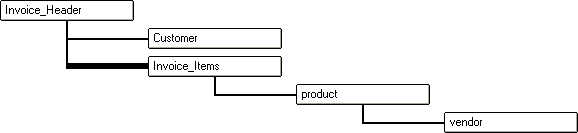

Understanding Levels in a Set
The number of levels in a set is determined by the number of one-to-many child tables in that set.
The following set does not have any one-to-many links. It only has one level, the top level, or the Invoice_items level.
On the other hand, this set has two levels: Invoice_header, and Invoice_items.

When you run a query in a form that is based on a set with more than one level, you can specify at which level you wish to query.
Query without Cross Level
|
Level of the Query |
Fields That You Can Query |
|
Invoice_Header (level 1) |
Invoice_Header Customer |
|
Invoice_Items (level 2) |
Invoice_Items Product Vendor |
|
Product (level 3) |
Product Vendor |
In the above example, if you query at the Invoice_header level, your query can include fields from the Invoice_header table, and the Customer table (i.e. all of the one-to-one links at that level).
If you query at the Invoice_items level, your query can include fields from the Invoice_items table, the Product table and the Vendor table.
If you choose the Cross Level option then you can query on fields at any level in the set. When you view the results of a Cross Level query in a form, Alpha Five finds all of the parent record that meet the criteria, or that have child records that meet the criteria. However, for each parent record found, ALL of the child records are shown. For example, in the case of above set, which has two levels, assume that you specified the following filter expression:
|
(Invoice_header->date > {1/1/2002}) .and. (invoice_items->qty > 5) |
Alpha Five would find all of the invoices in 2002, that contained any line item with a quantity greater than 5. Let's say that there are 5 matching invoices. Your form would show the five matching invoices, and in the embedded browse on the form where the invoice_items were displayed, all of the items for each invoice would be displayed (not just the items that had a quantity greater than 5).
If you wanted to only display the line items that had a quantity greater than 5, you could perform a second query at the Invoice_items level for: invoice_items->quantity > 5.
Query with Cross Level
|
Level of the Query |
Fields That You Can Query |
|
Invoice_Header (level 1) |
Invoice_Header Customer Invoice_Items Product Vendor |
|
Invoice_Items (level 2) |
Invoice_Items Product Vendor |
|
Product (level 3) |
Product Vendor |
See Also
Understanding Link Alternatives